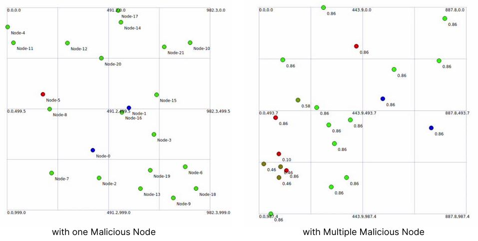

Predictive Link Stability and Trust-Aware Routing in FANETs
A machine learning–based routing protocol that uses Q-learning to enable resilient and self-optimizing routing in Flying Ad-hoc Networks (FANETs)
View GitHub Repository
Our Team


Supervisors


Project Summary
Flying Ad Hoc Networks (FANETs), composed of Unmanned Aerial Vehicles (UAVs), have diverse civilian and military applications but suffer from major communication challenges caused by high-speed three-dimensional mobility, frequent topology changes, and intermittent links. These dynamics degrade Quality of Service through increased packet loss and delay, while the decentralized and potentially adversarial nature of FANETs demands strong security mechanisms to detect malicious or non-cooperative nodes.
This project proposes QBR (Q-Learning Based Routing), a unified predictive link stability and trust-aware routing framework for FANETs. Unlike conventional approaches that treat link stability and trust as independent components, QBR integrates cross-layer link metrics, a composite trust model, and distributional reinforcement learning through a Quantile Regression Deep Q-Network (QR-DQN) into a single cohesive architecture. By moving from reactive routing to an adaptive, uncertainty-aware decision-making paradigm, the framework jointly optimizes link quality and node reliability in real time.
The framework is evaluated in a simulation environment using NS-3 against OLSR and AODV baselines. Results confirm that QBR achieves higher Packet Delivery Ratio, more stable end-to-end delay, and improved resilience under adversarial conditions. Control overhead is managed through Multipoint Relay optimization, message piggybacking, and threshold-based suppression mechanisms, ensuring performance gains are achieved without disproportionate communication costs.
1. Abstract
Flying Ad Hoc Networks (FANETs), composed of Unmanned Aerial Vehicles (UAVs), are increasingly critical for mission-oriented applications ranging from disaster response to intelligent surveillance. However, their high-speed three-dimensional mobility, frequent topology changes, and exposure to adversarial threats pose significant challenges for reliable and secure routing. Existing approaches largely treat link stability and trust evaluation as independent problems, limiting their effectiveness in dynamic aerial environments. This paper proposes a unified predictive link stability and trust-aware routing framework, termed QBR, which integrates cross-layer link metrics, a composite trust model, and distributional reinforcement learning through a Quantile Regression Deep Q-Network (QR-DQN). The composite trust model combines direct, indirect, and path-level trust components, while the multi-metric state representation incorporates SNR, ETX, delay, jitter, and node mobility parameters. Control overhead is mitigated through Multipoint Relay optimization, message piggybacking, and threshold-based suppression mechanisms. Simulation results demonstrate that QBR consistently outperforms OLSR and AODV in Packet Delivery Ratio, end-to-end delay, jitter, and scalability, while exhibiting improved resilience under adversarial conditions. The findings confirm that jointly optimizing link quality and trust through uncertainty-aware learning yields more stable and secure routing in highly dynamic FANET environments.
3. Methodology
Baseline Protocol and Design Motivation
The proposed framework was benchmarked against OLSR and AODV to establish a performance reference. OLSR operates proactively through Multipoint Relays but lacks predictive capabilities and trust awareness. AODV establishes routes reactively on demand, making it susceptible to frequent route discovery overhead under high mobility. Neither protocol incorporates link quality prediction or trust-aware decision-making, reflecting the core limitations motivating the development of QBR.
Reinforcement Learning-Based Routing Framework
The routing problem is formulated as a Markov Decision Process and solved using reinforcement learning. The state space represents current network conditions including link quality metrics and trust values. The action space corresponds to next-hop node selection, and the reward signal provides feedback based on routing performance and link reliability. A standard Q-learning model was initially implemented before being extended to a Quantile Regression Deep Q-Network (QR-DQN), which models the full distribution of expected returns rather than a scalar estimate. This enables uncertainty-aware, risk-sensitive routing decisions under stochastic link variations and mobility-induced unpredictability.
Link Stability Modeling and Metric Selection
Routing decisions are based on a comprehensive multi-metric evaluation framework. The incorporated metrics include Packet Delivery Ratio, End-to-End Delay, Jitter, Throughput, Expected Transmission Count (ETX), Signal-to-Noise Ratio (SNR), and node mobility parameters (position and velocity). A key contribution is the cross-layer integration of SNR from the data link layer into the network layer routing process, enabling more accurate link quality estimation and anticipatory decision-making before link degradation manifests as packet loss.
Reward Function Design
The reward function is formulated as a multi-objective optimization function balancing reliability, latency, stability, and security. Positive rewards are assigned to routing decisions selecting stable, high-quality, and trustworthy links, while penalties are applied for link failures, packet drops, selection of low-trust nodes, and paths with high energy consumption. Link Expiration Time is included as a reward component, enabling the agent to prefer routes with longer expected lifetimes and reducing the frequency of route failures.
Trust-Aware Routing Mechanism
A composite trust model is incorporated into the routing framework. The trust value of each node is computed as a weighted combination of direct trust derived from first-hand behavioral observations, indirect trust obtained from neighboring node recommendations, and path trust representing cumulative trustworthiness along an entire routing path. The trust score is integrated into both the state space and reward function of QR-DQN. A threshold-based filtering mechanism progressively excludes nodes below a predefined trust level from routing candidates, producing a self-correcting behavior where malicious or non-cooperative nodes are gradually isolated without centralized coordination.
Control Overhead Optimization
To address resource constraints, control overhead is minimized through Multipoint Relay optimization for efficient topology dissemination, piggybacking of neighbor and trust information within Topology Control messages, and HELLO message suppression to eliminate redundant periodic transmissions. A threshold-based control mechanism triggers updates only when meaningful changes in network state are detected, ensuring overhead does not scale linearly with network size.

4. Results and Analysis
Reliability — Packet Delivery Ratio
QBR maintains PDR values predominantly within the range of approximately 0.88 to 0.96 across the simulation duration, whereas OLSR fluctuates between 0.72 and 0.88, and AODV ranges between 0.60 and 0.79. QBR exhibits a smoother trajectory with limited fluctuations, demonstrating that the QR-DQN model effectively stabilizes routing decisions over time by anticipating link degradation rather than reacting to failures after they occur.
Latency — End-to-End Delay
Following the initial convergence phase, QBR stabilizes and maintains delay values in the range of approximately 0.0023–0.0024 seconds, consistently performing better than OLSR and comparably to AODV after stabilization. The predictive nature of QR-DQN reduces retransmissions and route rediscovery overhead, which are major contributors to delay in conventional protocols.
Scalability under Increasing Node Density
QBR demonstrates a monotonic upward trend in PDR as node density increases, effectively leveraging greater path diversity through intelligent routing decisions. In contrast, both OLSR and AODV exhibit downward trends, with AODV performing worst at higher densities due to frequent route discovery overhead and link breakages. The performance gap between QBR and baseline protocols widens as the number of nodes increases, confirming scalability advantages.
Trust-Aware Routing under Adversarial Conditions
In the presence of malicious nodes, OLSR experiences noticeable degradation in PDR and increased delay due to its inability to differentiate cooperative from non-cooperative nodes. QBR maintains relatively stable performance by integrating trust into both the state representation and reward function, ensuring routing decisions inherently penalize nodes with declining trust scores. The system exhibits self-correcting behavior where malicious nodes are progressively isolated without explicit blacklisting.



5. Conclusion
This paper presented QBR, a unified predictive link stability and trust-aware routing framework for FANETs, integrating cross-layer link metrics, a composite trust model, and distributional reinforcement learning via Quantile Regression Deep Q-Network. By transitioning from reactive routing to an adaptive, uncertainty-aware decision-making paradigm, the proposed framework jointly optimizes link quality and node reliability within a single cohesive architecture.
Simulation results confirmed consistent improvements over baseline protocols across all evaluated performance dimensions. QBR achieved higher Packet Delivery Ratio, faster latency convergence, and more stable delay performance compared to both OLSR and AODV. Scalability analysis demonstrated that QBR effectively leverages increased network density through intelligent routing decisions, while threshold-based trust filtering enabled reliable isolation of malicious nodes without explicit blacklisting, reflecting a self-correcting routing behavior that conventional protocols lack. Control overhead optimizations, including MPR refinement, message piggybacking, and HELLO suppression, ensured that these gains were achieved without disproportionate communication costs.
It is important to acknowledge that all evaluations were conducted under the Gauss–Markov mobility model within a controlled simulation environment, and results should be interpreted carefully when generalizing to real-world deployments involving hardware constraints, channel fading, and heterogeneous node behavior. Future work will focus on validating the framework under diverse mobility patterns and on physical UAV platforms, automating trust parameter tuning through adaptive learning techniques, and strengthening resilience against collusion-based adversarial behaviors. These directions collectively represent the pathway toward practical, secure, and reliable FANET communication for next-generation autonomous UAV applications.